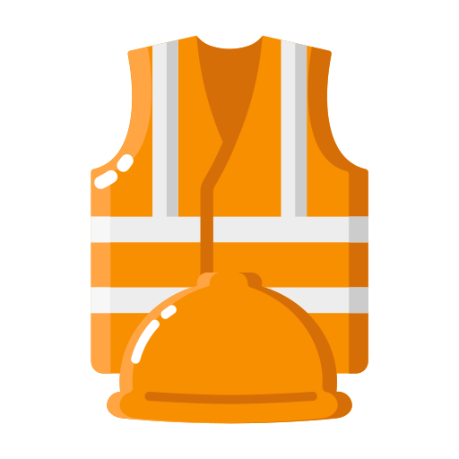

Curso disponível para ensino médio integrado e subsequente. Neste curso o aluno aprende a supervisionar todas as etapas do processo de confecção de roupas e acessórios. Isso inclui planejamento, criação, escolha de matéria-prima, corte e costura, finalização e controle de qualidade. Também vai estudar o funcionamento de máquinas de costura industrial e equipamentos utilizados na indústria de confecção.
O curso técnico de Marketing, oferecido no ensino médio integrado, capacita o aluno a estudar o mercado, identificar oportunidades, criar valor para o consumidor e comunicar ofertas. O profissional pode atuar em departamentos de marketing de empresas de diversos setores, como varejo, tecnologia, saúde, finanças e manufatura.

O curso técnico de Segurança do Trabalho, oferecido no ensino subsequente, capacita profissionais para identificar e controlar riscos no ambiente de trabalho, prevenir acidentes, garantir a saúde dos trabalhadores e cumprir normas de segurança. O técnico atua em áreas como prevenção de acidentes, higiene ocupacional e gestão de equipamentos de proteção.
O curso técnico de Formação de Docentes prepara futuros professores para a educação infantil e os primeiros anos do ensino fundamental. Os alunos aprendem pedagogia, planejamento de aulas e gestão de sala de aula, visando formar educadores que criem ambientes de aprendizagem inclusivos e estimulantes para o desenvolvimento das crianças.
O curso técnico de Recursos Humanos, oferecido no ensino subsequente, capacita profissionais para gerenciar atividades de administração de pessoal, como recrutamento, seleção, treinamento, folha de pagamento e gestão de conflitos. O objetivo é formar profissionais aptos a atuar em processos de gestão de pessoas, garantindo o bom funcionamento do setor de RH nas organizações.